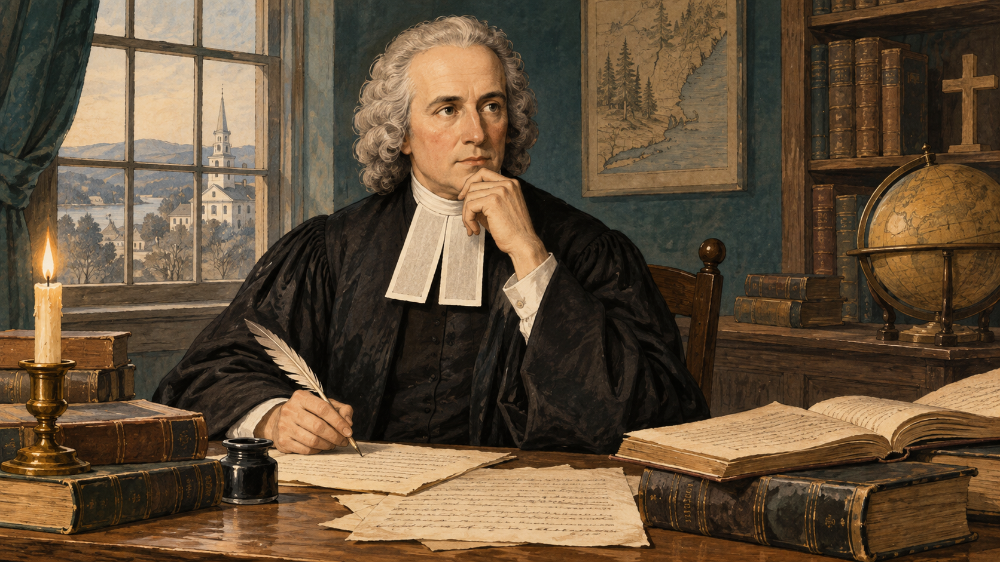
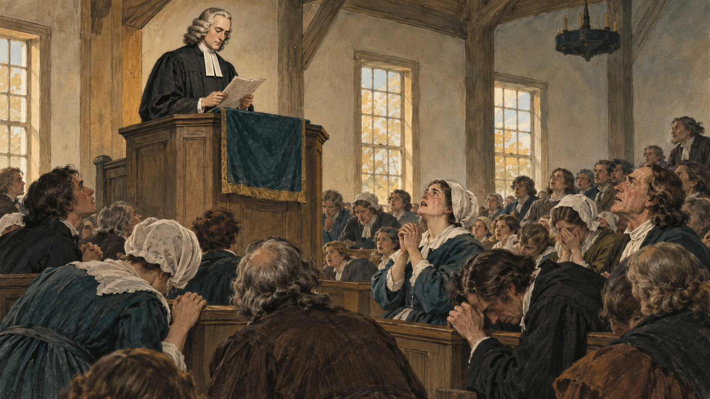
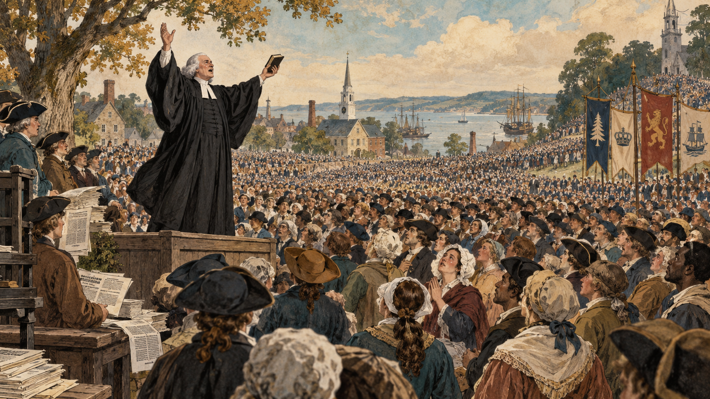
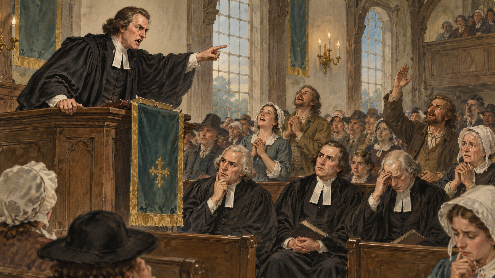
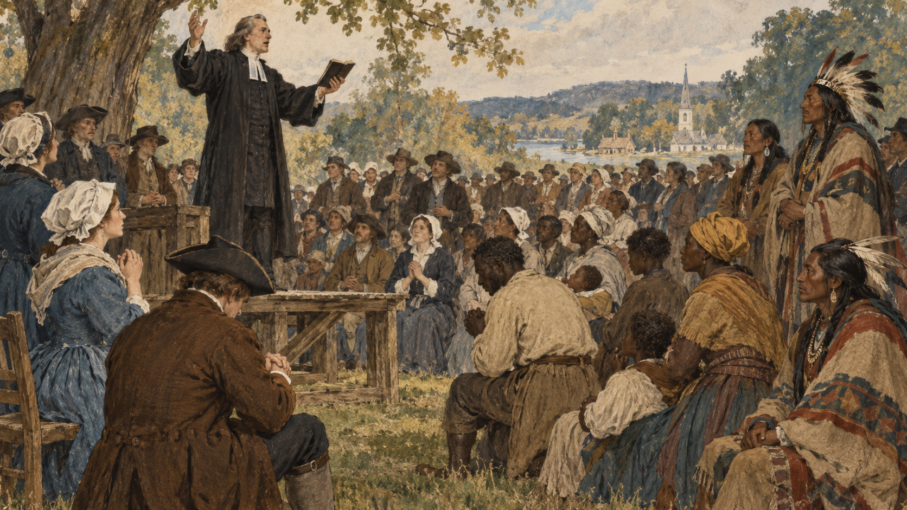

Who Gets to Speak for God? The Great Awakening and the Crisis of Authority
HIST 101 · United States History to 1877
Who Gets to Speak for God?
The Great Awakening and the Crisis of Authority
Chapter 4 · Provincial America and the Struggle for a Continent, 1720–1763 Lecture 3 of 4
A Thursday Morning · New England · 1740
Your minister is in his pulpit, where he has been for twenty years.
He was educated. He was ordained. He was settled over your parish by law.
Two towns over, a stranger is preaching in a field. Four thousand people are already there.
Where do you go — and what does it mean that this is now a choice at all?
A Religious World Growing Comfortable
The 1720s–1730s colonies
Richer, more literate, more connected
Educated clergy, settled congregations
Newspapers, books, imported goods
Anglicization reshaped church life too
What worried some ministers
Church membership without conversion
Correct doctrine, cold hearts
Religion as respectable social habit
The charge of “dead formality”
Colonists had not stopped being religious. Religion was growing — more churches, more clergy, more denominations. The complaint was that religion could become socially respectable and spiritually empty at the same time.
Genuine Faith Requires Inward Conversion
Several Protestant traditions already taught that genuine faith required inward conversion—not simply church membership, correct doctrine, or respectable behavior.
1720s · New Jersey
Dutch Reformed minister Theodorus Frelinghuysen preaches experiential piety in the Raritan Valley. Nearby Presbyterians watch closely.
1720s–30s · Pennsylvania
William Tennent trains ministers at the Log College in Neshaminy — including his son Gilbert.
1730s · Northampton
Solomon Stoddard has already presided over repeated local “harvests” of souls. His grandson inherits a congregation that expects them.
Northampton Revival, 1734
Jonathan Edwards’s local revival showed what the older call to inward conversion could look like in a single community.
The setting
Northampton, Massachusetts
Jonathan Edwards urged renewed religious devotion
Conversion, not outward respectability, became the central concern
What happened
More than 300 reported conversions in roughly six months
Religious intensity spread into neighboring Connecticut Valley towns
The local surge declined by the end of 1735
This was not yet a continent-wide Great Awakening. It was a major local revival—and a preview of what would soon spread more widely.
Jonathan Edwards, Northampton
Born Connecticut, 1703 · Yale at fourteen · Northampton revival, 1734
Read Locke, natural philosophy, and Reformed theology
Sin disorders the will; no one earns salvation
Grace produces a new birth: new loves, not merely new manners
Knowing doctrine, attending church, and behaving decently do not guarantee saving faith.
His revivalism rested on a demanding theological system.

Modern illustration · Edwards as scholar and theologian
Suspended Over the Pit
Enfield, Connecticut · July 8, 1741

Modern illustration · A revival meetinghouse
“The God that holds you over the pit of hell, much as one holds a spider … abhors you.”
Jonathan Edwards, Sinners in the Hands of an Angry God, 1741
You are already suspended over destruction
Only grace holds you
The terror makes dependence on grace emotionally real.
Edwards’s Theology
His theology explains both the urgency of revival preaching and his caution about emotional displays.
The human problem
Sin disorders the will. Education, church membership, and respectable conduct cannot restore a person to God.
The new birth
Only God’s grace can produce conversion—a new set of spiritual affections, not merely improved behavior.
The practical test
Strong emotion may accompany conversion, but lasting change in affections and conduct is the better evidence.
For Edwards, revival was neither mere excitement nor a rejection of reason: inward experience had to show itself in a transformed life.
George Whitefield: Religion Goes Viral
Born Gloucester, England, 1714 · Oxford “Methodist” circle
Ordained Church of England — then locked out of pulpits
So he preached in fields, commons, courthouse steps
Itinerancy: 1739–1741, Philadelphia to Charleston to Boston
Exclusion from pulpits opened a new venue: no pews, no parish boundary, and crowds no church building could hold.

Modern illustration · Preaching beyond church and parish
The Revival Runs on Print
AnnounceNewspapers publicize arrivals.
→
CirculateCheap journals and sermons spread the message.
→
DebateCriticism generates more publicity.
Franklin printed Whitefield because his writings sold.
Revival traveled through the commercial print world—the same presses that sold almanacs, advertisements, and political pamphlets.
Two Ways to Be Authoritative
The settled parish minister
The itinerant celebrity
Ordained by a church body
Ordained — but preaching outside any charge
Settled over one congregation, often for life
Moving constantly; belongs to no one parish
Authority from office and law
Authority from reputation, print, and results
Congregation assigned by geography
Audience assembled by choice
Authority has become portable. When a layperson walks past his own minister to hear a stranger in a field, he has already compared two kinds of legitimacy — and picked one.
Tennent Challenges the Ministry
Nottingham, Pennsylvania · March 8, 1740

Modern illustration · A challenge from the pulpit
“An ungodly ministry is a great curse and judgment. These caterpillars labor to devour every green thing.”
Gilbert Tennent, The Danger of an Unconverted Ministry, 1740
Irish-born Presbyterian · Trained at the Log College
His target: ministers in the pulpits down the road.
Who Judges the Man in the Pulpit?
A minister could hold office and still be unconverted
Ordination, diplomas, and church courts could not prove inward conversion
Tennent challenged clerical legitimacy while retaining clergy and education
The people in the pews might have to judge the man in the pulpit.
The Churches Split Over the Answer
New Lights
Old Lights
Conversion is the test of true religion
Order is the safeguard of true religion
Welcome revival preaching
Distrust “enthusiasm”
Accept itinerants crossing parish lines
Defend the settled, learned ministry
Judge a minister by spiritual fruit
Judge by learning and institutional standing
This is not religious people versus non-religious people. Both sides are Christians arguing about how true religion can be recognized — and about who has the right to decide.
Education and the Great Awakening
1746College of New Jersey → Princeton New Side Presbyterian
1764College of Rhode Island → Brown Baptist sponsorship
1766Queen’s College → Rutgers Dutch Reformed
1769Dartmouth Wheelock’s missionary projects
Revival controversy made ministerial education a priority: these schools trained clergy and gave evangelical networks a durable institutional life.
Who Was Now Inside the Religious Public?
Women: conversion narratives, meetings, exhortation, and correspondence with ministers
Enslaved Africans: addressed as people capable of conversion
Samson Occom: Mohegan, born 1723; revival convert, minister, teacher, and diplomat
Everyone in the field was a sinner equally dependent on grace. Social rank could not guarantee spiritual standing.

Modern illustration · A shared audience, unequal legal standing
Religious Voice and Unequal Rights
Expanded participation
Continuing restrictions
Women gained religious voice
Ordination remained closed to women
Enslaved people were addressed as capable of conversion
Slavery and unequal legal standing persisted
Native converts gained educational opportunities
Missionary schools remained embedded in colonial power
The religious public widened faster than the legal or political community.
Expanded religious participation within continuing systems of inequality.
Significance of the Great Awakening
“Behold, I make all things new”
How revival remade religious authority, institutions, and colonial public life
Revelation 21:5 · Seven consequences, with the revolutionary legacy treated as an interpretation to evaluate.
I. A Challenge to Established Religious Authority
A new test of authority
Conversion and inward piety mattered more
Education, ordination, and office were no longer enough
Ordinary believers evaluated a minister’s spiritual character
What revivalists emphasized
Personal conversion and religious experience
Salvation over strict liturgical conformity
Liberty of conscience against compulsory support
The Awakening weakened traditional clerical authority without eliminating clergy or churches.
II. A Distinctive Colonial Evangelical Culture
European Protestant traditions adapted to colonial conditions rather than simply reproducing old-world church structures.
Conversion
Personal commitment and practical piety became defining marks of religious life.
Mobility
Itinerant preaching made parish boundaries less decisive and affiliation more voluntary.
Accessibility
Preaching reached beyond formally established institutions and their inherited routines.
The result was not a complete break with Europe, but a more distinctive colonial evangelical culture.
III. Religious Competition Built Schools
1746College of New Jersey → Princeton New Side Presbyterian
1764College of Rhode Island → Brown Baptist sponsorship
1766Queen’s College → Rutgers Dutch Reformed
1769Dartmouth Wheelock’s missionary projects
Religious competition produced new educational institutions and durable denominational networks; it did not merely destroy older churches.
IV. A Wider Religious Public — Not Equal Rights
Broader spiritual participation
Continuing social hierarchy
Women served as converts, witnesses, correspondents, and transmitters of revival news
Patriarchal institutions and limits on ordination remained
Enslaved and free Black people were preached to as capable of conversion
Slavery and racial hierarchy continued
Native communities encountered revival preachers and mission schools
Conversion did not end colonial expansion or conflict
Spiritual experience could outweigh social prestige without creating social equality.
V. New Networks, New Divisions
Across older boundaries
Itinerants preached outside their own churches
Revival networks crossed denominational lines
Conversion could matter more than liturgical difference
Within denominations
New Light and Old Light conflicts intensified
Presbyterians divided into New Side and Old Side
Churches split over who could recognize true religion
A new line of division emerged: revivalist versus anti-revivalist.
VI. A Shared Transcolonial Experience
TravelItinerant ministers moved from colony to colony.
→
PrintNewspapers circulated sermons, controversies, and conversions.
→
RecognitionWhitefield became known throughout British America.
Colonists in different provinces could increasingly imagine themselves participating in the same movement.
Not yet American nationalism: a growing intercolonial consciousness and shared cultural network.
VII. Was the Awakening Proto-Revolutionary?
The possible connection
Colonists practiced judging authority, defending conscience, organizing voluntarily, and participating beyond their locality.
The limits
Revivalists sought salvation, not revolution; many remained Loyalists; the revivals did not create social equality.
The best conclusion
Later political actors could redirect habits of judgment and association toward the imperial crisis.
Interpretation, not direct cause
The Awakening did not cause the Revolution. It contributed to an eighteenth-century culture in which inherited authority could be challenged rather than automatically obeyed.
From Religious Authority to Imperial Authority
Within twenty years, Britain’s victory would raise new questions about what the colonies owed the empire.
Religious dissent may have supplied habits of judgment, association, and public argument that some colonists later used in politics.
That is a possible contribution to political culture, not a direct road from revival to revolution.
Next lecture The struggle for a continent: what the empire spent to win it, and what it decided the colonists owed in return.
Online Hour
Independent Study
Nine extensions that would not fit the classroom hour — read these on your own time.
These slides deepen the lecture. They are not on the participation quiz, and no classroom slide depends on them.
Independent Study · 1
Was There Ever One “Great Awakening”?
The name is later
Contemporaries spoke of “awakenings” and extraordinary works of God. No organization was ever named the Great Awakening. Joseph Tracy's 1842 history helped consolidate many revivals into one capitalized event.
Butler's challenge
In 1982 Jon Butler called it an interpretive fiction — revivals that were fragmented and geographically uneven, made to carry enormous explanatory weight.
Lambert's answer
Frank Lambert agrees the unity was constructed — but argues the construction began in the 1740s, by revival promoters using newspapers and printed narratives to connect distant conversions.
Where this leaves us
The Great Awakening is best understood as both a real network of related revivals and an interpretation of them — one the participants themselves helped build with a printing press.
Independent Study · 2
The Presbyterian Schism, Precisely
1740Tennent preaches The Danger of an Unconverted Ministry at Nottingham
→
1741The Synod of Philadelphia fractures; the revivalist New Brunswick group is excluded
→
1745The Presbytery of New York joins revival sympathizers to form the Synod of New York — the main New Side body
→
1758Reunion
Why the sequence matters
The common shortcut — “the church split in 1741 and the New Side immediately became the Synod of New York” — compresses four years out of the story. And the reunion matters most: Presbyterianism absorbed the revivalist emphasis on experiential religion while restoring standards of education and order.
Independent Study · 3
Samson Occom and the Cost of the Opportunity
What the revival opened
Mohegan, born 1723; converted during the revivals
Studied with New Light minister Eleazar Wheelock
Became a teacher, minister, diplomat, and writer
Preached to both Native and colonial audiences
His success helped inspire Moor's Indian Charity School
What it cost
Missionary education aimed partly at assimilation
Occom helped raise funds for Native education
Those efforts contributed to a college — Dartmouth — that increasingly served white students
The pattern to notice
Evangelical networks created real Indigenous opportunity while remaining embedded in colonial power. Both things are true at once, and neither cancels the other.
Independent Study · 4
How Edwards Answered the Critics
The books behind the sermon
A Faithful Narrative of the Surprising Work of God (London, 1737) — the Northampton revival described for a transatlantic audience; John Wesley read it
Some Thoughts Concerning the Present Revival of Religion in New England (1742)
A Treatise Concerning Religious Affections (1746)
Primary sources worth reading
Edwards, Sinners in the Hands of an Angry God (1741)
Tennent, The Danger of an Unconverted Ministry (1740)
Chauncy, Seasonable Thoughts (1743)
Whitefield, Letter to the Inhabitants of Maryland, Virginia, North and South Carolina (1740)
Franklin, Autobiography, the Whitefield passages
The move worth stealing
Edwards conceded his opponents' strongest evidence — swooning proves nothing — and then argued that the concession did not settle the question. Granting a point is not losing an argument.
Independent Study · 5
Edwards at Enfield, 1741
Jonathan Edwards’s famous sermon mattered because of both its words and its reception.
The sermon
A carefully written manuscript
An argument built through vivid language
Comparatively restrained delivery
The audience
Contemporary accounts describe outcry loud enough to interrupt the service.
The emotional eruption belonged chiefly to the hearers.
1734Northampton revival→1740Whitefield tours New England→1741Enfield sermon
Enfield came seven years after Northampton, in a region already primed for revival.
Independent Study · 6
Franklin Measures Whitefield’s Voice
“He had a loud and clear voice, and articulated his words and sentences so perfectly.”
Benjamin Franklin, Autobiography, recalling George Whitefield
In Philadelphia, Franklin walked away from the courthouse until Whitefield’s voice blurred, then estimated the space within hearing range.
30,000+Listeners Franklin thought could physically fit within earshot
An estimate of capacity, not a count of attendance.
Contemporaries were trying to explain a new scale of religious gathering.
Observers had reasons to exaggerate crowd sizes; nobody counted tickets.
Independent Study · 7
Charles Chauncy’s Case Against Revival
“Religion, of late, has been more a Commotion in the Passions than a Change in the Temper of the Mind.”
Charles Chauncy, Seasonable Thoughts on the State of Religion in New-England, 1743
What the Old Light critic could point to
Screaming, swooning, and bodily agitation
Itinerants entering other ministers’ parishes
People claiming direct impulses from God
James Davenport denouncing ministers by name and urging separation
Even revival defender Jonathan Edwards agreed that emotion alone proved nothing. The disagreement was whether excess discredited the movement as a whole.
Independent Study · 8
Revival Controversy Built Institutions
JudgeRevivalists called some colleges and synods insufficiently converted.
→
SplitPresbyterians divided in 1741 and reunited in 1758.
→
BuildRevivalists established schools to train converted clergy.
Revivalists wanted education joined to conversion.
The result: more institutions and a more competitive religious marketplace.
Independent Study · 9
Whitefield, Revival, and Slavery
“I think God has a quarrel with you, for your abuse of and cruelty to the poor negroes.”
George Whitefield, Letter to the Inhabitants of Maryland, Virginia, North and South Carolina, 1740 · Printed by Benjamin Franklin
He criticized cruelty without demanding abolition
He campaigned to legalize slavery in Georgia
He acquired enslaved workers for his orphanage
He died a slaveholder
Revival teaching could recognize the equal need for grace while leaving the law of bondage intact.
Study Sheet
Terms From This Lecture
Great Awakening — the linked Protestant revivals of the 1730s–40s across the British Atlantic.
New Light / Old Light — New England supporters and opponents of the revivals.
Anglicization — the colonies' growing imitation of British manners, goods, institutions, and print.
New Side / Old Side — the Presbyterian names for the same split.
“Dead formality” — the revivalist charge that outward religion could be correct and spiritually empty.
Enthusiasm — the Old Light term for the belief that one's own impulses come directly from God.
New birth / conversion — the inward transformation revivalists made the test of true religion.
“Proto-revolutionary event” — Paul Johnson's 1997 phrase for the Awakening; a thesis, not a fact.
Itinerancy — preaching outside one's own parish, across settled ministers' boundaries.
Interpretive fictionIND. STUDY — Butler's charge that historians over-unified the revivals.
Log College — William Tennent's Pennsylvania school for revivalist ministers.
Religious AffectionsIND. STUDY — Edwards's 1746 treatise on what counts as evidence of grace.
People to know: Jonathan Edwards · George Whitefield · Gilbert Tennent · Charles Chauncy · (Independent Study: Samson Occom, James Davenport, Theodorus Frelinghuysen)
1 / 30
Anglicization
The eighteenth-century process by which colonists became more British, not less — importing British consumer goods, architecture, manners, educational models, print, and political forms.
Why it matters here: religion was part of that process. Clergy grew better educated and congregations more settled. Anglicization did not mean colonists were becoming less religious — which is why the revivalists' complaint was about the quality of religion, not its disappearance.
“Dead formality”
The revivalist charge that a church could keep every correct form — baptism, attendance, doctrine, respectable conduct — while containing no living faith at all.
Why it matters here: this is the accusation that starts the whole crisis. If outward religion can be perfectly correct and still be empty, then no outward marker — including a minister's credentials — settles the question of who is genuinely Christian.
The Log College
An informal school at Neshaminy, Pennsylvania, where William Tennent — an Ulster immigrant who had moved from Anglicanism to Presbyterianism — trained his sons and other young men for the ministry.
Why it matters here: its graduates carried one conviction into the pulpit: a minister needs theological education and ordination and a personal conversion. Gilbert Tennent learned it there. It is also the ancestor of the College of New Jersey — Princeton.
New birth (conversion)
For evangelicals, the inward transformation in which a sinner acquires new spiritual affections — new loves, desires, and perceptions oriented toward God. Not a decision to behave better; a change in what a person wants.
Why it matters here: it cannot be guaranteed by family, baptism, education, church membership, or ordination. Making this the test of true religion is what turns a revival into a crisis of authority.
Itinerancy
Traveling preaching — ministering outside one's own parish, and often inside somebody else's, without that minister's invitation.
Why it matters here: the parish system assumed that a congregation belonged to its settled minister. An itinerant broke that assumption physically. Old Lights called it intrusion; New Lights called it necessary. Either way it made religious authority mobile for the first time.
New Lights and Old Lights
The New England names for the two sides of the revival controversy. New Lights supported the revivals and made conversion the test of genuine religion. Old Lights opposed revival excess and defended order, learning, and the settled ministry.
Why it matters here: both groups were devout Christians. The dispute was never faith versus reason — it was a disagreement about what kind of evidence identifies real religion, and about which institutions get to weigh it.
New Side and Old Side
The Presbyterian vocabulary for the parallel conflict. New Side = revival supporters, associated with the Log College and the New Brunswick presbytery. Old Side = defenders of church order and formal educational standards for ministers.
Why it matters here: you do not need four factions. You need one recurring problem showing up in two denominational vocabularies. Presbyterian government made the conflict more visible because presbyteries and synods formally controlled ordination and discipline.
“Enthusiasm”
In the eighteenth century this was an insult, not a compliment. It meant the belief that one's own strong impulses were direct revelations from God — and therefore beyond correction by scripture, learning, or church authority.
Why it matters here: Old Lights feared enthusiasm because it made every excited individual his own authority. Charles Chauncy could point to real cases, which is why his criticism cannot be dismissed as elite snobbery.
“Proto-revolutionary event”
Paul Johnson's phrase, from A History of the American People (1997): “The Great Awakening was thus the proto-revolutionary event.” He argued the revivals created transcolonial unity, weakened clerical authority, and made independence possible.
Why it matters here: the phrase is memorable, which is exactly the danger. It is a historiographical thesis with a long pedigree — going back at least to Heimert in 1966 — not a fact that falls out of the evidence. Treat it as a claim to be tested.
“Interpretive fiction”
Jon Butler's term, from “Enthusiasm Described and Decried: The Great Awakening as Interpretative Fiction” (Journal of American History, 1982). His charge: historians had welded geographically uneven, locally distinct revivals into a single continental event and then asked it to explain American democracy.
Why it matters here: it is the strongest counterweight to Heimert and Johnson, and a standing warning against teaching the Awakening as one wave that hit every colony the same way.
A Treatise Concerning Religious Affections (1746)
Edwards's mature answer to the revival's critics. Genuine grace must engage the affections — but neither unusual bodily effects nor intense feeling proves anything by itself. The reliable sign is a durable change in a person's affections and conduct over time.
Why it matters here: it shows Edwards agreeing with Chauncy's evidence and disagreeing with his conclusion. It is also the clearest statement of the lecture's core idea: revival turned religion into a problem of evidence.